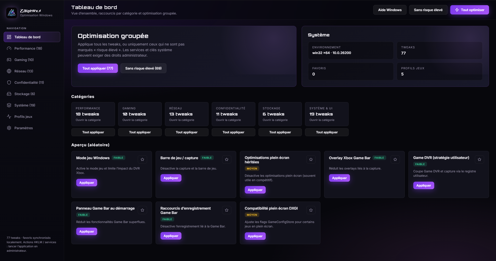

Performance
CPU, GPU, alimentation, animations, services système et plans d'énergie.
乙3lphΨxメ Tweaks regroupe des optimisations Windows ciblées pour les FPS, la latence, la propreté système, la stabilité gaming et la préparation BIOS, le tout dans une app claire, rapide et gratuite.

Le site met en avant ce que l'application fait déjà bien: organiser les optimisations, montrer le niveau de risque, et laisser l'utilisateur garder le contrôle.
CPU, GPU, alimentation, animations, services système et plans d'énergie.
Mode jeu, fullscreen, Game Bar, DVR, MPO, DXGI et profils orientés compétition.
TCP, QoS, NetBIOS, LLMNR, ECN, autotuning et paramètres de latence.
Télémétrie, pubs, activité, Wi-Fi Sense, localisation et suggestions Windows.
Hibernation, NTFS, Prefetch, nettoyage auto, Search et temporaires utilisateur.
Souris, Explorer, widgets, sons, Snap Assist, shell, BITS et tâches annexes.
Après l’optimisation Windows, le BIOS permet d’aller chercher les derniers pourcentages de réactivité : mémoire, CPU, latence et stabilité globale.
Le visuel peut être agressif, mais les réglages BIOS suivent une ligne stricte : cohérence, sécurité et absence de risques inutiles.
Positionnement orienté boot, stabilité, mémoire, CPU et sensation de fluidité globale.
On présente le BIOS comme le prolongement logique de l'app, pas comme une promesse douteuse.
Le guide BIOS complet est disponible exclusivement sur notre Discord. Il couvre les réglages avancés pour la stabilité, la mémoire, le CPU et la réactivité système. Rejoignez la communauté pour y accéder et obtenir un accompagnement personnalisé.
Accéder au guide BIOSOui. Le site présente l’application comme une solution gratuite avec accès communautaire via Discord.
Non. L’interface est pensée pour rester lisible, avec niveaux de risque et catégories claires.
Les gains dépendent de votre configuration et de l’état actuel du système. Impossible de prédire un nombre d’FPS précis, car cela varie selon le matériel, les jeux, les logiciels et les réglages existants. Les améliorations les plus visibles concernent la réactivité, la latence et la stabilité globale.
Non. Toutes nos optimisations sont testées et sécurisées. Nous ne poussons jamais le matériel au‑delà de limites raisonnables et nous validons la stabilité des configurations avancées.